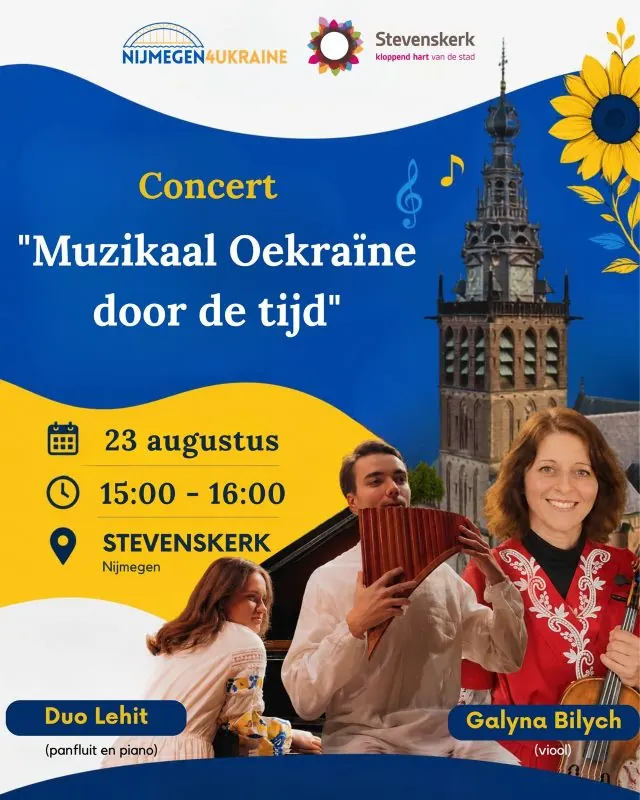

Dit evenement is afgelopen. Bekijk wat er binnenkort te doen is.
Evenement
Concert “Muzikaal Oekraïne door de tijd heen”
- Wanneerzondag 23 augustus 2026, 15.00 tot 16.00 uur
- WaarStevenskerk
Sint Stevenskerkhof 62, 6511 VZ Nijmegen Route

Ter gelegenheid van de Onafhankelijkheidsdag van Oekraïne in Nijmegen hebben Nijmegen4Ukraine en Stevenskerk een speciaal concert gepland: “Muzikaal Oekraïne door de tijd heen” in de Stevenskerk op 23 augustus vanaf 15.00 tot 16.00 uur.
Duo Lehit, een panfluit-piano-ensemble opgericht door Taras Berchtold en Anastasiia Bohodysta, samen met Galyna Bilych, violiste van het Nationaal Symfonieorkest van Oekraïne, zal diverse muziekstukken van Oekraïense componisten en volksliederen ten gehore brengen.
Duo Lehit creëert een unieke klankwereld waarin de lyrische stem van de panfluit de rijke klanken van de piano ontmoet. Sinds 2022 treden ze samen op in diverse zalen in Nederland en Zwitserland.
Galyna Bilych werd al tijdens haar studie aan de Nationale Music Academie van Oekraine in Kyiv in 1997 violiste in het Nationaal Silfonisch Orkest van Oekraine. Een loopbaan en leven dat op slag veranderde door de brute aanval op haar thuisland. Sinsdien verblijft zij met haar kindeten in Nederland en is als violiste in kamermuziek – ensembles en orkesten actief.
Dit speciale concert is gratis en we zamelen donaties in voor de Stichting Netherlands4Ukraine. Voor en na het concert kunt u ook handgemaakte Oekraïense souvenirs kopen en meedoen aan het maken van camouflagenetten voor Oekraïense verdedigers. Korte inleidende speeches van Oekraïense en Nederlandse organisaties zullen dit feestelijke concert openen.
Meer evenementen bij Stevenskerk

Binnenkort in Nijmegen
 UitgelichtSean Taylor24 okt, 20.00 uurDe Brauerij
25okt
UitgelichtSean Taylor24 okt, 20.00 uurDe Brauerij
25okt UitgelichtHighlight Tours in het Vrijheidsmuseum25 okt, 14.00 uurVrijheidsmuseum
25okt
UitgelichtHighlight Tours in het Vrijheidsmuseum25 okt, 14.00 uurVrijheidsmuseum
25okt Uitwisselingsconcert Harmonie Hatert met DOV Wijchen25 okt, 13.00 uur
27okt
Uitwisselingsconcert Harmonie Hatert met DOV Wijchen25 okt, 13.00 uur
27okt Filmvertoning: Het land van mijn ouders27 okt, 19.00 uurHuis van de Nijmeegse Geschiedenis
Filmvertoning: Het land van mijn ouders27 okt, 19.00 uurHuis van de Nijmeegse Geschiedenis